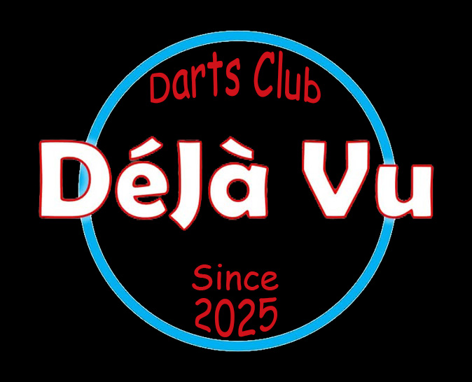

Wie ben ik?

Hey! Ik ben Daan Speelmans, student Digitale Vormgeving aan PXL Hasselt. Ik ben gepassioneerd door visuele storytelling en vertel graag verhalen aan de hand van foto- en videografie. Beelden gebruiken om emoties, sfeer en ideeën over te brengen is wat mij drijft.
Daarnaast hou ik me graag bezig met grafisch ontwerp en webdesign, waar creativiteit en structuur samenkomen. Ik werk graag aan projecten waarin ik mijn eigen stijl kan ontwikkelen en blijf mezelf uitdagen om bij te leren. Buiten het creatieve werk vind je me terug in mijn dartsploeg of in de keuken, twee plekken waar focus, plezier en experimenteren centraal staan.
Portfolio Projecten
Video projecten
| Triatlon 111
Voor Triatlon Team Limburg maakte ik tijdens de 111 een actiegerichte film rond mijn papa. De focus lag op het vastleggen van dynamische sportbeelden, waarbij ik werkte met verschillende camerastandpunten, beweging en tempo om de intensiteit van de wedstrijd over te brengen. In de montage lag de nadruk op ritme, timing en flow, afgestemd op de actie en de sfeer van het event.
|♫ Dangerous - Gigga The Producer
Voor een schoolproject moesten we in groepjes een videoclip maken van een artiest, wij hadden gekozen voor het nummer Dangerous van Gigga The Producer!
|Reclame One-Shirt
Voor een schoolproject moesten we in groepjes een zelf verzonnen reclamevideo maken voor een product en doelgroep, wij hadden als product sportshirt en als doelgroep jongeren!
Fotografie projecten
Hieronder vind je een selectie van foto’s die ik heb gemaakt in verschillende contexten. Een deel daarvan is geschoten tijdens de gouden bruiloft van mijn grootouders, waar ik werd gevraagd om de sfeer, de gasten en de bijzondere momenten vast te leggen. Daarnaast zie je beelden van een Sinterklaasfeest bij het bedrijf Ebema, waar ik de beleving, interacties en warme sfeer van het evenement in beeld bracht. De overige foto’s zijn gemaakt tijdens mijn vakantie in Frankrijk, waarbij ik experimenteerde met licht, perspectief en natuurlijke landschappen. Samen vormen deze beelden een mix van portret-, event- en landschapfotografie en tonen ze mijn oog voor detail, compositie en emotie, evenals mijn veelzijdigheid als fotograaf.


Graphic Design
| Instagram Post Surfen
Voor een schoolopdracht creëerde ik een Instagram-post waarin een minder bekende sport op een visueel aantrekkelijke manier werd gepresenteerd. Bij dit project lag de focus op compositie, kleurgebruik en typografie om de aandacht te trekken en de sport op een toegankelijke manier onder de aandacht te brengen. Zo combineerde ik creativiteit met strategie om een post te maken die zowel informatief als esthetisch aansprekend is.

Extra Ervaringen
Teamkapitein Dartsclub
Naast mijn creatieve werk ben ik ook kapitein van mijn dartsclub. Ik regel wedstrijden, communicatie en planning, en zorg ervoor dat het team vlot samenwerkt.
Instagram: dcdejavu_ Skills
Adobe Photoshop 80%
Adobe Illustrator 70%
Adobe Premier Pro 70%
Adobe After Effects 60%
HTML | CSS | JavaScript 55%
Fotografie 90%
Videografie 80%